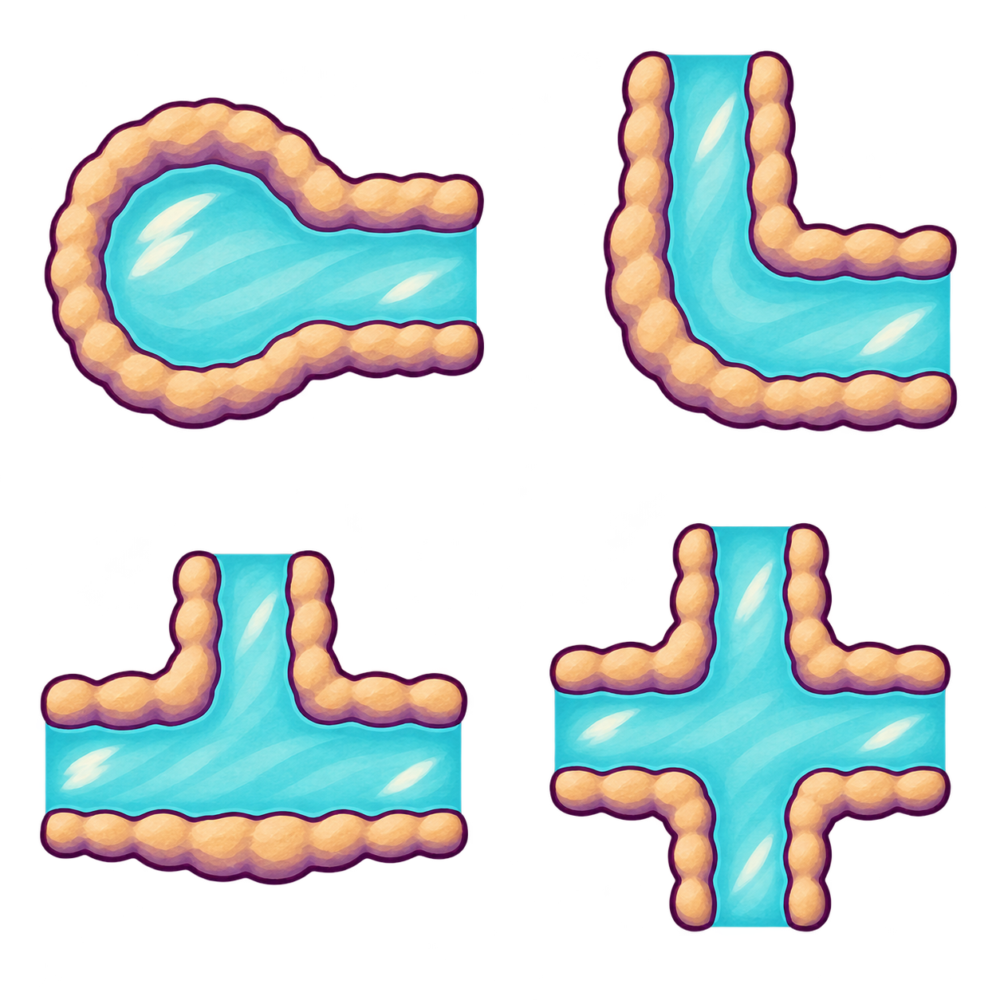
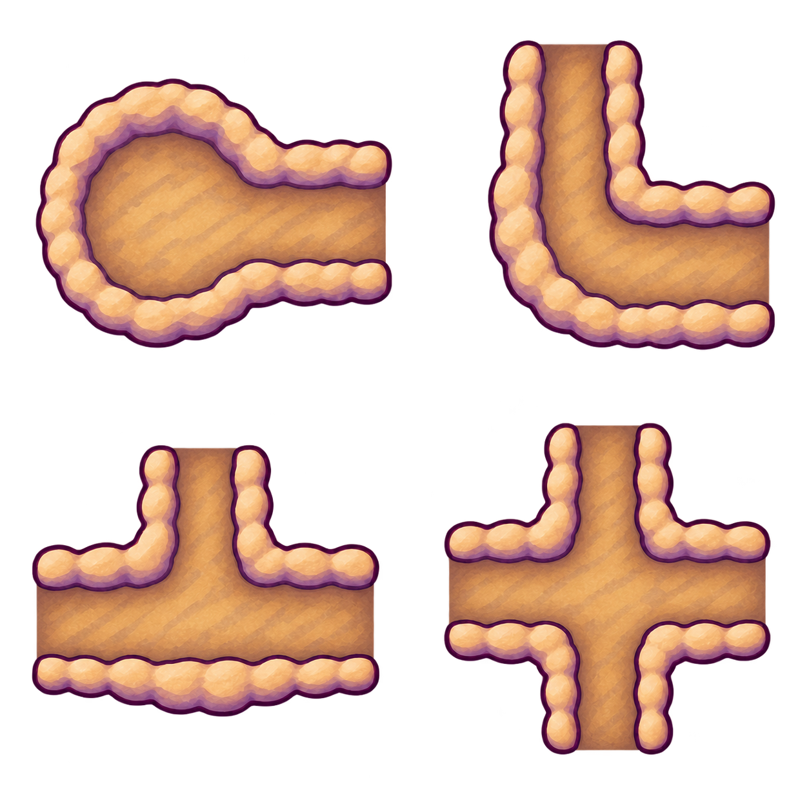
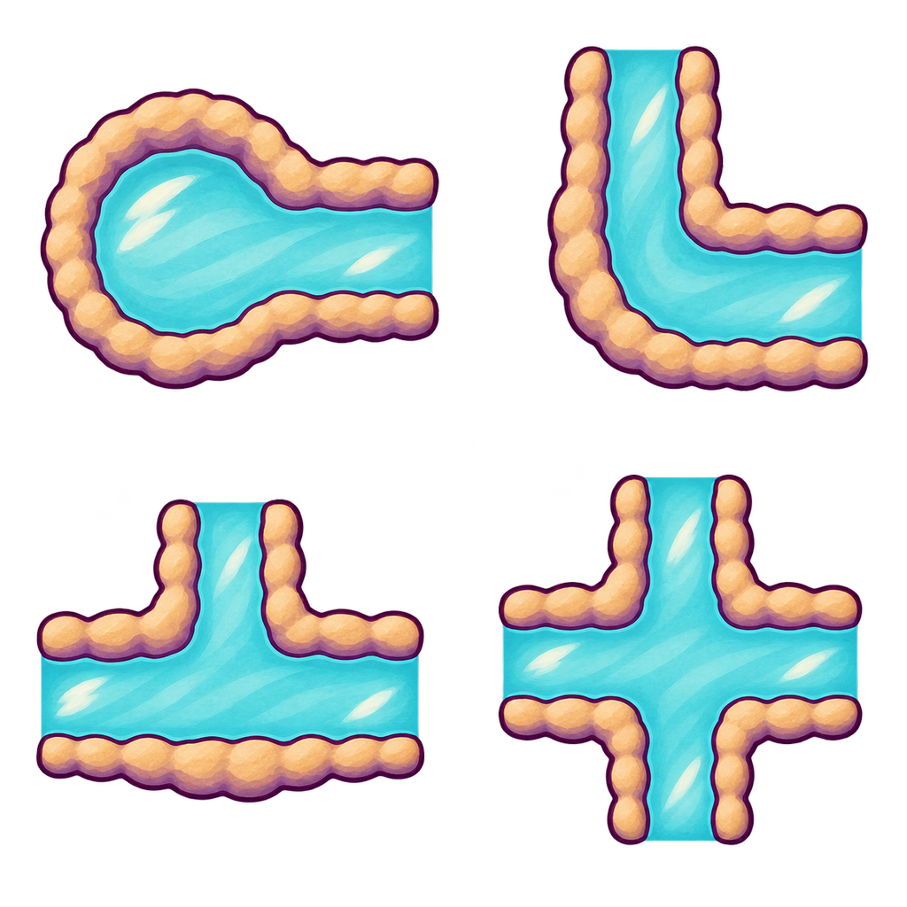

wet_attempt_01/native_generated.png · source4.6/5

Complete preserved original or uniform complete-canvas derivative. Unbound; no joined-network or action acceptance.
6dd4207ebe976b3e5db429051c81f06a1f644191be94f86f789766e2988fe05dTwo preserved ImageGen originals, two uniform1024 derivatives and eight individually reviewed object regions. All source4.6/5; actual port joins remain below the floor.
All28 latest grid states and join scores · Source evaluations and hashes

Complete preserved original or uniform complete-canvas derivative. Unbound; no joined-network or action acceptance.
6dd4207ebe976b3e5db429051c81f06a1f644191be94f86f789766e2988fe05d
Complete preserved original or uniform complete-canvas derivative. Unbound; no joined-network or action acceptance.
86eac09710c17cbf298068ae6fe9480a49571bd9a776f4a2fac13b79ffff926b
Complete preserved original or uniform complete-canvas derivative. Unbound; no joined-network or action acceptance.
d944238ef2fd32fcf76da2c874c929b5af045d197e8f3d4678e735f84caee6f8Complete preserved original or uniform complete-canvas derivative. Unbound; no joined-network or action acceptance.
77789423cd81570df1d30c9d5407d043d6377021d4a973b8c4573850a2fcb3ddOne right open port; round left end/bowl has intact exterior banks. Water reaches the right plane, with no internal ring. Broad matte ochre/cream, lavender shade and plum contour match the selected source family. Exact runtime port calibration/sampling/join widths remain pending.
Actual V4 wet joins4.4; dry selected4.5 provisional. Native region window is a review annotation; no extracted or repaired raster.
Two open ports and one continuously aqua rounded bend. Exterior earth banks follow the outside elbow without crossing the water. Broad matte ochre/cream, lavender shade and plum contour match the selected source family. Exact runtime port calibration/sampling/join widths remain pending.
Actual V4 wet joins4.4; dry selected4.5 provisional. Native region window is a review annotation; no extracted or repaired raster.
Three broad open arms share one clear aqua centre; lower side closes with exterior earth bank. Broad matte ochre/cream, lavender shade and plum contour match the selected source family. Exact runtime port calibration/sampling/join widths remain pending.
Actual V4 wet joins4.4; dry selected4.5 provisional. Native region window is a review annotation; no extracted or repaired raster.
All four open arms share one clear interior with exterior corner banks only. No rail or circular wall divides the middle. Broad matte ochre/cream, lavender shade and plum contour match the selected source family. Exact runtime port calibration/sampling/join widths remain pending.
Actual V4 wet joins4.4; dry selected4.5 provisional. Native region window is a review annotation; no extracted or repaired raster.
The same declared RIGHT port topology remains open and the shared centre is clear dry ochre/lavender loam, with no aqua water or water glints. Broad matte cream/ochre banks and plum contour match the wet counterpart. Source-only4.6; actual switching/ports/joined dry networks remain pending.
Actual V4 wet joins4.4; dry selected4.5 provisional. Native region window is a review annotation; no extracted or repaired raster.
The same declared UP,RIGHT port topology remains open and the shared centre is clear dry ochre/lavender loam, with no aqua water or water glints. Broad matte cream/ochre banks and plum contour match the wet counterpart. Source-only4.6; actual switching/ports/joined dry networks remain pending.
Actual V4 wet joins4.4; dry selected4.5 provisional. Native region window is a review annotation; no extracted or repaired raster.
The same declared LEFT,RIGHT,UP port topology remains open and the shared centre is clear dry ochre/lavender loam, with no aqua water or water glints. Broad matte cream/ochre banks and plum contour match the wet counterpart. Source-only4.6; actual switching/ports/joined dry networks remain pending.
Actual V4 wet joins4.4; dry selected4.5 provisional. Native region window is a review annotation; no extracted or repaired raster.
The same declared UP,RIGHT,DOWN,LEFT port topology remains open and the shared centre is clear dry ochre/lavender loam, with no aqua water or water glints. Broad matte cream/ochre banks and plum contour match the wet counterpart. Source-only4.6; actual switching/ports/joined dry networks remain pending.
Actual V4 wet joins4.4; dry selected4.5 provisional. Native region window is a review annotation; no extracted or repaired raster.